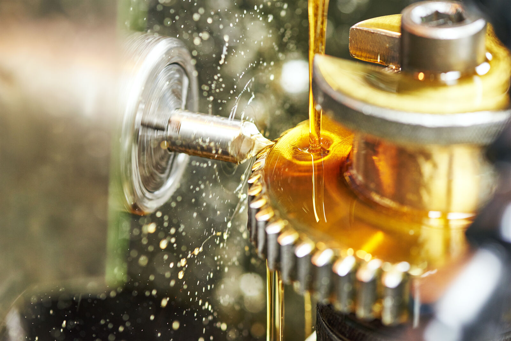
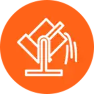
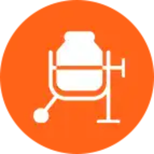
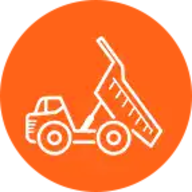
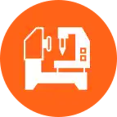
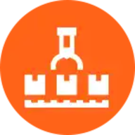
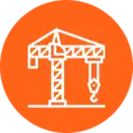
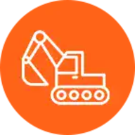
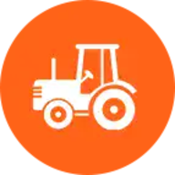

Стигнете по-далеч и постигнете повече с по-високата ефективност и защита на индустриалните смазочни материали на Gulf.
Над 120 години страстно разработваме и доставяме продукти, които надхвърлят индустриалните стандарти. С доказани резултати, богато наследство и огромен опит репутацията на Gulf за съвършенство в индустриалните смазочни продукти е призната в световен мащаб в множество индустрии.
От металообработване и строителство до производство на смазочни материали за поддръжка на машини — индустриалните продукти на Gulf са доверени от клиенти по света заради надеждната и икономически изгодна подкрепа, която увеличава производителността и повишава рентабилността на индустриалните операции, разчитащи на високопроизводителни машини.
Индустриалните смазочни материали на Gulf могат да се прилагат в много различни индустрии и сектори, за да осигуряват надеждна и икономична защита и подобряване на производителността, включително:
Индустриалните смазочни материали на Gulf са подходящи и за различни други приложения за редовна поддръжка на машини.

Да бъдеш в безопасност, а не да съжаляваш, със сигурност е най-добрата политика, когато става въпрос за поддръжката на машините, които задвижват бизнеса ви. Зад кулисите на всяко успешно индустриално начинание оптимално работещата техника, действаща с максимална ефективност, движи рентабилността и потенциала. Макар инвестицията в правилното оборудване да е важна, правилната поддръжка на тези жизненоважни активи е от решаващо значение за поддържане на постоянна производителност и успех.
Разбираме колко критична е поддръжката на машините и колко разрушителни могат да бъдат престоите — затова иновативните ни решения са насочени към това ключовото ви оборудване да е в оптимално работно състояние по всяко време. Правилното смазване и профилактична грижа са от решаващо значение за безопасната и надеждна работа на оборудването, като намаляват нуждата от коригиращи действия, за да можете да работите и прогнозирате с увереност.
Индустриалните смазочни материали и течности на Gulf не просто отговарят на непосредствените нужди на машините ви — търговските, безопасностните и екологичните ползи също са далекосъжни. От пълно спокойствие за продължителни периоди и защита срещу скъпоструващи престои до по-ниски експлоатационни разходи и по-голям капацитет и производителност — интелигентните ни продукти едновременно увеличават продуктивността и намаляват поддръжката на машините.
Разбираме, че всеки бизнес е уникален, с различни грижи и предизвикателства. Затова специализираните ни екипи се фокусират върху разработването на усъвършенствани, специализирани решения, които помагат на бизнеса да повиши ефективността и рентабилността с минимални усилия и разходи. Всеки индустриален смазочен материал и греса в гамата ни е прецизно формулиран, за да осигурява оптимална производителност на всеки етап, като защитава оборудването ви за безпроблемна работа и помага за намаляване на ужасяващите престои.
Насочени към бъдещето, винаги в движение напред. От стомана, цимент и минно дело до ACGM, строителни смазочни материали и течности за металообработване — следим внимателно ключовите индустриални сектори и непрекъснато наблюдаваме нововъзникващите пазари, за да сме сигурни, че пред каквито предизвикателства и да се изправите, сме до вас с решение, което отговаря точно на нуждите ви.
Заедно стигаме по-далеч и постигаме повече — затова често си сътрудничим с индустриални производители на оборудване (OEM), за да разработваме готови за бъдещето смазочни материали, които отговарят и надхвърлят критичните изисквания на приложенията.
Удължавайки живота на машините ви и осигурявайки оптимална производителност, индустриалните смазочни материали на Gulf са универсални и създадени да предлагат гъвкава функционалност в различни сектори, включително:

Стоманена и металургична промишленост
Циментова промишленост
Минно дело
Машини за леене под налягане
Повдигащи и транспортиращи устройства
Строителна техника
Земекопна техника
Земеделски машини